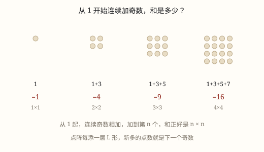
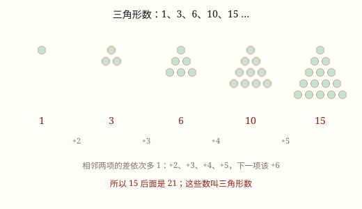

算式、数列与周期中的规律
1×1、11×11、111×111 的结果排成一座山——算式也有规律，但规律有边界，一进位就变样。
| 所属主题 | 探索规律 |
|---|---|
| 所属模块 | 数学思考 |
| 课标学段 | 第三学段（5~6年级） |
| 前置知识 | 加法、乘法的运算律与减法、除法的性质、有余数除法的意义与余数的性质 |
| 核心素养 | 数感运算能力推理意识创新意识模型意识应用意识 |
教材定位
人民教育出版社《2024年版》
对应一下数学广角「找规律」：算式中的规律与简单推理。；对应一下数学广角「找规律」：数列中的规律。；对应一下数学广角「找规律」：周期中的规律。
课标要求
| 数与代数·数量关系 | 探索用数或符号表达简单情境中的变化规律（例4和例5）。 印刷第 19 页 行为动词：探索 |
|---|---|
| 数与代数·数量关系 | 能解决生活中的简单问题，并能对结果的实际意义作出解释，经历探索简单规律的过程（例14），形成初步的模型意识和应用意识。 印刷第 21 页 行为动词：运用 |
说明
算式里也有规律，而且规律常常是「形状」对「形状」：算式的样子越整齐，结果的样子也越整齐。找这类规律只有一条路——先老老实实算出前几个，把算式和结果排成两列，看结果怎么随算式变，再往下猜一个，最后动手验一遍。
1 × 1 = 1，11 × 11 = 121，111 × 111 = 12321，1111 × 1111 = 1234321。结果像一座小山，从 1 爬到最高处再降下来；最高的那个数字，正好等于因数里 1 的个数。所以 11111 × 11111 应该是 123454321。
这座「山」不是巧合。111 × 111 拆成 11100 + 1110 + 111，错位相加时中间那一位被加了 3 次，两边依次被加 1 次、2 次；加的次数从 1 增到 3 再减回 1，写出来就是 1、2、3、2、1。
但规律有边界。1 的个数超过 9 个，中间位要加 10 次以上，出现进位，山形被「压塌」：1111111111 × 1111111111 = 1234567900987654321，中间那段已经乱了。
9 也有一套：99 × 99 = 9801，999 × 999 = 998001，9999 × 9999 = 99980001。n 个 9 自己乘自己，结果是 (n - 1) 个 9、一个 8、(n - 1) 个 0，最后一个 1。
（数列中的规律）
把一列数排成一行，问「下一个是多少」，这就是找数列的规律。看数列不要盯着某一个数，要看相邻两项之间的关系：后一项比前一项多了几？多出来的这几个数自己有没有规律？后一项是前一项的几倍？还是后一项等于前两项加起来？
差不变——等差数列。剧场第一排 20 个座位，往后每排多 2 个：20、22、24、26……后一项减前一项总是 2。第 10 排就是 20 + 2 × 9 = 38 个。乘 9 不是乘 10——第 1 排一次也没加。
商不变——等比数列。一张纸厚 0.1 毫米，对折一次 0.2，两次 0.4，三次 0.8……后一项总是前一项的 2 倍。对折 20 次，厚度是 0.1 毫米乘 2 的 20 次方，超过 100 米，比三十层楼还高。等比数列开头长得慢，后面长得最快。
差自己在变，但变得很整齐——差后等差数列。工地堆钢管：最上层 1 根，第二层 2 根，第三层 3 根……总数是 1、3、6、10、15。相邻两项的差是 2、3、4、5，每次多 1。这列数也叫三角数列，因为它正好能摆成一个三角形。
平方数列。1、4、9、16、25 就是 1×1、2×2、3×3……队列站成正方形时，人数正好是平方数：每边 5 人的方阵有 25 人。看它的差：3、5、7、9，一串奇数。
后一项等于前两项之和——兔子数列。一对兔子每月生一对，小兔养一个月才能生：1、1、2、3、5、8、13……从第三项起，每项都是前两项的和。它比等比长得慢，但相邻两项的比值越来越接近 1.618，向日葵种子的排列里就藏着它。
看起来五种，其实只有一句话：看相邻两项怎么变。差、商、和，都是在回答同一个问题。
（周期中的规律）
有些规律不是「越来越大」，而是「转一圈又回来」：星期一过了是星期二，星期日过了又是星期一；红绿灯红、绿、黄，循环往复。这样一组一组重复出现的现象叫周期现象，重复的那一组叫一个周期。
问「第 100 个是什么」，不用一个一个数到 100。只要算「100 里装得下几个整周期、还多几个」：总数 ÷ 周期 = 商……余数。商告诉你排了几整轮，余数告诉你落在这一轮的第几个。
余数是 0 最容易错：它不是「第 0 个」，而是「正好排完整轮」，落在周期的最后一个。
还有一件事要先做：定好周期里第一个是谁。1 月 1 日是星期四，问 1 月 20 日是星期几，得先算经过了多少天，再用天数除以 7 看余数，从星期四往后数。
所以周期题看着花样多，做法只有三步：量出周期有多长，找到起点在周期里的第几位，再用除法看余数。三步里最容易错的是第二步——3 月 1 日并不一定是周期里的第一个，直接拿天数去除，余数就对不上位置了。
使用场景
口算比赛：认出「几个 1 相乘」的形状，不用竖式直接报答案。
核对账单：先按规律估一个数，再和计算器比，差得离谱就说明按错了。
大数计算前先估位数：结果该有几位，心里先有数。
猜数游戏：给一串算式猜下一个，靠的就是这份「形状感」。
（数列中的规律）
座位、楼层、台阶：一排比一排多几个，是等差。
对折、转发、翻倍：一条消息每次转给 3 个人，是等比。
堆管子、摆三角形、握手：差在变大，是三角数列。
方阵、正方形地砖：横竖一样多，是平方数。
（周期中的规律）
值日、座位轮换：四个人一轮，问第几天轮到谁。
红绿灯、地铁班次：固定秒数循环，问某一刻是什么状态。
日历与星期：七天一轮，问某天是星期几。
分拣口、单双号：按序号循环分配，问第几件去哪个口。
注意点
先看清变的是什么：是 1 的个数在变，还是加数在变。
一定要试边界：规律常在某个位置断掉，进位是最常见的断点。
一定要试边界：规律多半在某个位置突然断掉，进位就是最常见的断点。
写完数一数位数：山形结果的位数是「2n − 1」，位数不对就是中途漏了。
（数列中的规律）
至少看四项：1、2、4 后面可能是 8，也可能是 7。
「第几项」要对准：从首项到第 n 项，只加了 n − 1 次。
等比要数「翻了几次」：对折 1 次是 2 层，n 次是 2 的 n 次方层。
单位先统一：0.1 毫米和米不能直接相乘。
（周期中的规律）
周期长度要数准：从第一个到最后一个算一组，「红红黄」是 3 不是 2。
余 0 落在最后一个，不是第一个，也不是「没有」。
商和余数分工不同：商管「几轮」，余数管「这一轮里第几个」。
起点不一定是周期开头：先看起点排在周期第几位，再动除法。

图 1：连续奇数的和，正好摆成一个正方形

图 1：差一次比一次多 1，下一个数就能推出来

图 1：除以一组的个数，看余数落在第几个
为什么是这样
算理推导
先算三个：1 × 1、11 × 11、111 × 111，上下对齐排好，看每一位怎么变。
用乘法分配律把 111 × 111 拆成 11100 + 1110 + 111，看清每一位被加了几次。
加的次数就是这一位上的数字：中间 3 次，两边 1 次和 2 次，于是写出 1、2、3、2、1。
再加一位变成 1111 × 1111，次数变成 1、2、3、4、3、2、1，正是 1234321。规律对上了，才敢往外推。
（数列中的规律）
数列是「按位置排好的数」，位置叫第 1 项、第 2 项。规律说的不是某个数有多大，而是「从这一项到下一项，怎么变」。
所以在相邻两项之间画个箭头，把变化量写上去：差、商、和。变化量自己排成一行，又成了一列数。
新的一列如果整齐，规律就找到了；如果不整齐，就对变化量再做一次同样的事，这就是「差后等差」的来历。
找到规律要往回验：用它算第 4 项、第 5 项，和实际排出来的对一对。对不上，说明那只是巧合。
（周期中的规律）
周期是 6 个一组：第 1 到第 6 个是第一轮，第 7 个又回到第 1 个。
100 ÷ 6 = 16 余 4：前面 16 轮用掉 96 个，第 97 个是新一轮的第 1 个，再往后数 3 个，第 100 个就是第 4 个。
如果余数是 0，说明最后一下正好落在整轮末尾——那是第 6 个，不是第 0 个。
所以「余几就是第几个」只在余数不为 0 时直接成立；余 0 要翻译成「周期的最后一个」。
动手实验
用计算器算出 11111 × 11111、111111 × 111111、1111111 × 1111111，抄成一行；再算十个 1 乘十个 1。你会发现中间那段突然乱了——「山」是在第 10 层塌的。两行并排放着，比任何解释都清楚。 （数列中的规律） 拿一张纸对折，每折一次记下层数：1、2、4、8、16……折到第 7 次就折不动了。再用计算器算 0.1 毫米乘 2 的 30 次方，看看「折 30 次比珠峰高」是不是真的：结果约 107 千米。 （周期中的规律） 在纸上写 1 到 6 围成一个圈，手指从 1 开始点数，数到 6 又回 1。数几圈你会发现手指总在同样的位置打转。再算 100 ÷ 6 的余数，手指正好停在 4 上。用珠子穿一条「3 红 2 黄 1 蓝」的链子，数到第 25 颗验一验：25 ÷ 6 = 4 余 1，是红的。
按场景的例题
例 1（场景：农业生产） 数学节速算
屏幕跳出 1111 × 1111，要求 3 秒内报出答案，怎么算？
解：先看形状：4 个 1 相乘，数字从 1 升到 4 再降回 1，像座小山，位数是 4 + 4 - 1 = 7 位。再逐位想：个位是 1 × 4 = 4；十位是 1 × 4 + 4 × 1 = 8；百位是 1 × 4 + 4 × 4 + 4 × 1 = 24，写 4 进 2；千位同理往上升到 3，之后对称地降回来。七个数字从左到右是 1、2、3、4、3、2、1，所以结果是 1234321。
答：1234321。
例 2（场景：购物消费） 算一天的营业额
一款商品 99 元，一天卖出 99 件，营业额是多少元？
解：2 个 9 自乘：1 个 9、一个 8、1 个 0、一个 1，得 9801。也可以绕开规律验一次：99 × 99 = 9900 - 99 = 9801。
答：9801 元。
例 3（场景：计量与估算） 估一页的字数
一本资料每页 111 行、每行 111 个字，一页大约多少个字？
解：3 个 1 相乘，结果是三层的山：12321，约 1.2 万字。
答：12321 个字，约 1.2 万字。
例 4（场景：物流运输） 数分拣架上的货
分拣架每格放 33 件，一共 34 格，共多少件？
解：33 × 34 = 33 × 33 + 33 = 1089 + 33 = 1122。顺手还能猜：333 × 334 应是 111222，验一次就放心了。
答：1122 件。
例 5（场景：校园生活） 报告厅的座位
报告厅第一排 22 个座位，往后每排多 3 个。第 12 排有多少个座位？
解：差是 3，从第 1 排到第 12 排增加 11 次：22 + 3 × 11 = 55。
答：第 12 排有 55 个座位。
例 6（场景：饮食与配比） 折纸能折多厚
一张纸厚 0.08 毫米，对折 20 次以后有多厚？
解：每折一次厚度乘 2，20 次是 2 的 20 次方 = 1048576 倍：0.08 × 1048576 \approx 83886 毫米。
答：约 84 米，接近 28 层楼高。
例 7（场景：工程建造） 工地上的钢管堆
一堆钢管，最上层 3 根，往下每层多 1 根，共 8 层。一共有多少根？
解：每层的根数是 3、4、5……10，是等差数列。首尾配对：3 + 10、4 + 9……每对都是 13，一共 4 对，13 × 4 = 52。
答：一共 52 根。
例 8（场景：自然现象） 兔子的繁殖
一对兔子每月生一对，小兔出生后满一个月才开始生。从 1 对开始，12 个月后有多少对？
解：按月排：1、1、2、3、5、8、13、21、34、55、89、144，每项是前两项之和，数到第 12 项。
答：12 个月后有 144 对。
例 9（场景：上学日常） 轮流擦黑板
4 个人轮流擦黑板，1 号先擦。第 37 天轮到几号？
解：37 ÷ 4 = 9 余 1，前 9 轮正好用完 36 天，第 37 天是新一轮的第 1 个。
答：1 号。
例 10（场景：行程出行） 路口的红绿灯
红灯 30 秒、绿灯 25 秒、黄灯 5 秒，循环一次 60 秒。第 100 秒是什么灯？
解：100 ÷ 60 = 1 余 40。一轮里，0 到 30 秒红灯，30 到 55 秒绿灯，55 到 60 秒黄灯；40 秒落在绿灯里。
答：绿灯。
例 11（场景：绿化照明） 教室挂的彩灯
彩灯按 3 红、2 黄、1 蓝循环。第 100 盏是什么颜色？前 100 盏里红灯共几盏？
解：周期是 3 + 2 + 1 = 6。100 ÷ 6 = 16 余 4，第 4 个是黄色。红灯：16 轮里有 16 × 3 = 48 盏，余下 4 盏里前 3 盏是红，共 51 盏。
答：第 100 盏是黄色，红灯共 51 盏。
例 12（场景：家庭与年龄） 快递分拣格口
快递按 1、2、3 号格口循环分拣。第 1000 件去几号格口？
解：1000 ÷ 3 = 333 余 1，说明排完 333 整轮，第 1000 件是新一轮的第 1 个。
答：1 号格口。
常用推论
× 11 的速算：两头一拉，中间相加。23 × 11 = 253；57 × 11 中间 5 + 7 = 12，要向前进 1，得 627。
× 101 的速算：两位一隔，隔位加一。34 × 101 = 3434。
乘法分配律 (a + b) × c = ac + bc 是「错位相加」的根据，也是所有算式规律的总开关。
算式规律都有适用范围：位数一多，进位就改写形状，先用位数估一估，再决定能不能套规律。
等差数列：相邻两项的差固定，第 n 项 = 首项 + 差 × (n − 1)。（拓展）
等差数列求和 = (首项 + 末项) × 项数 ÷ 2，首尾配对就是这个式子的来源。（拓展）
等比数列：相邻两项的商固定，第 n 项 = 首项 × 商的 (n − 1) 次方。（拓展）
三角数列 1 + 2 + … + n = n × (n + 1) ÷ 2，堆钢管、握手、数线段都用它。（拓展）
看不出差和商时换个看法：隔一项看，或者看「后一项是不是前两项之和」。
总数 ÷ 周期 = 商……余数；余几就是周期里的第几个，余 0 就是最后一个。
数一共出现了几次：商 × 每轮里的次数，再加上余数那一段里还有的次数。
星期问题：经过的天数 ÷ 7，余几就从起始星期往后数几天；余 0 还是同一个星期。
做题顺序固定三步：先量周期长度，再定起点在第几位，最后用除法看余数。
易错点
错1 × 1 = 1，11 × 11 = 121，111 × 111 = 12321，于是断定 11111 × 11111 = 12345。
为什么错只盯住「最高位是几」，没看结果的整体形状，也没有多验一项。
正确结果是先升后降的 123454321，最高位在中间，两边对称。
错十个 1 乘十个 1，按山形写成 12345678910987654321。
为什么错1 的个数超过 9 个，中间位要加 10 次以上，出现进位，山形不再成立。
正确实际结果是 1234567900987654321，规律只在 9 个 1 以内好用。
错57 × 11 = 5127。
为什么错「两头一拉、中间相加」时 5 + 7 = 12，中间只写个位 2，十位的 1 要进到前面去。
正确57 × 11 = 627：中间写 2，向前进 1，5 变成 6。
错1、2、4，下一个一定是 8。
为什么错只看了三项。1、2、4 后面接 7 也说得通——每次加的差多 1。
正确再看一项才能定：1、2、4、8 是每次乘 2；1、2、4、7 是每次加的差多 1。
错第一排 22 个、每排多 3 个，第 12 排算成 22 + 3 × 12 = 58。
为什么错从第 1 排到第 12 排只增加了 11 次，不是 12 次。
正确22 + 3 × 11 = 55 个。
错对折 20 次后，厚度算成 0.08 × 20 = 1.6 毫米。
为什么错对折是乘 2，不是每折一次加一个原厚度；20 次是 2 的 20 次方倍。
正确0.08 × 1048576 \approx 84 米。
错看到 1、3、6、10，就说「差不一样，没有规律」。
为什么错差是 2、3、4，差自己在变，但变得很整齐。
正确差每次多 1，下一项是 15，这类数叫三角数列。
错彩灯 3 红 2 黄 1 蓝，第 96 盏：96 ÷ 6 = 16 余 0，所以是红色。
为什么错余 0 不是「没有」，而是正好排完 16 整轮，落在这一轮的最后。
正确第 96 盏是蓝色，也就是周期里的第 6 个。
错红灯 30 秒、绿灯 25 秒、黄灯 5 秒，把周期当成 55 秒。
为什么错黄灯也在循环里，漏掉它周期就短了 5 秒，后面的位置全错。
正确周期是 30 + 25 + 5 = 60 秒，用 60 去除。
错1 月 1 日是星期四，算 1 月 20 日：20 ÷ 7 = 2 余 6，从星期四往后数 6 天，得星期三。
为什么错1 月 1 日到 1 月 20 日经过的是 19 天，不是 20 天；而且星期四本身算第 0 天。
正确19 ÷ 7 = 2 余 5，从星期四往后数 5 天，是星期二。
直观理解
算式规律像一块印花模板：因数越长，花纹越大，样子不变。可模板有尺寸上限——超过 9 个 1，花纹就挤在一起，进位把图案压坏。 （数列中的规律） 数列像一列火车，每节车厢上写一个数。找规律不是盯住某一节车厢，而是看两节之间的挂钩：是「加几」「乘几」，还是「两节加起来」。挂钩整齐，整列车就整齐。 （周期中的规律） 周期像操场上的跑道：一直往前跑，跑到终点又回到起点。问「第 100 米在哪儿」，不用真跑 100 米，只要知道一圈多长，再看剩下几米。
先算三个排成行，看清形状再外推；中间最高两边降，一有进位就改样。 （数列中的规律） 先看差，再看商；差不变是等差，商不变是等比；差还变，就看差的差。 （周期中的规律） 一圈一圈转，除法看余数；余几就是几，余零是最后。